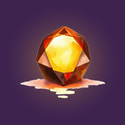

Cauldoku
A potion logic puzzle in an alchemist's shop.
Your master, the alchemist Orrin, has vanished, and his shop is yours to keep. Customers never name ingredients: they describe the potion they need, and you work out the recipe by the rules of alchemy, brew it and sell it. Every order has exactly one answer, reached by reasoning, never by guessing.
What is in it
- A story to solve Six chapters and thirty-six days on the road after your master, twenty-two customers with their own portraits, and watercolour scenes for every evening.
- Rules that change how you think Ingredients fuse into new potions, which become ingredients in turn — all the way to the Philosopher's Stone.
- A shop of your own A pedlar, a pantry, workshop upgrades, a Book of Potions and a journal of what you learn.
- After the Stone The shop goes on: master's orders, the hardest recipes, and mastery ranks from Apprentice to Sage.
- Calm and fair No timer that makes you lose, no energy, no paywalls; three free hints a day.
What stays on your device
No account and no server of ours. Puzzles are generated on your device and your progress stays there; the game's own code makes no network requests.
The Android game shows ads from the Yandex Advertising Network: a banner below the shelf, a full-screen ad between days now and then, and videos only when you tap a button for a reward. The ad software uses the internet and, only if you allow it, your advertising ID; you can change that in Settings → Advertising.
Languages
English, Русский.